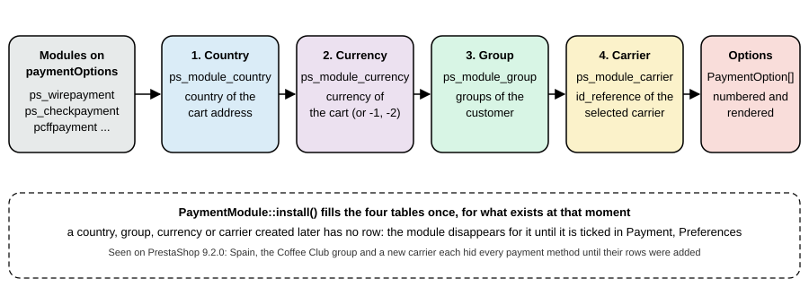

Payment and Carrier Modules
|
This content was generated with the assistance of AI and should be verified against the official documentation before being relied on in production. |
This page was written against PrestaShop 9.2.0 (released on 2026-09-30; Symfony 6.4; PHP 8.5.12 in the official Docker image;
Hummingbird 2.1.2; ps_onepagecheckout 0.6.7) and checked on 2026-10-27. Payment and carrier modules are the two kinds of module
that sit at the ends of the checkout described in Cart, Checkout and Orders: a
carrier module prices and describes a delivery option in step 3, and a payment module offers a payment method in step 4 and
creates the order. Both are ordinary modules (see Module Basics and
Hooks) with a more specific base class, a handful of hooks and, for the payment module, rules that
exist because the code handles money. Both are available on every installation of the open-source edition.
The running example is the Pocket Coffee shop. Its payment module offers three methods: "Pay at pickup in Madrid" (an offline
method: the order is created at once and the customer pays at the roastery), "Pay by card on the PCFF Pay page" (an external
method: the customer leaves the shop, and the order exists only after the provider’s signed notification arrives), and "Pay
with a card here" (an embedded method with a form inside the checkout). Its carrier module adds "Roastery pickup", priced by
weight and available only for parcels of up to 5 kg. The provider is simulated by the shell script of this page and by a stub
page, because no real payment account may be created for a documentation example; the module code, the checkout, the signature
check and the order creation are real. The module names carry the prefix pcff so that they stay apart from the other examples
of this section.
Payment modules
A payment module is a module whose main class extends PaymentModule instead of Module. The base class adds the validateOrder()
method that creates the order, and manages the restrictions that decide where the method is offered. A module has to do three
things: register the hook paymentOptions and return PaymentOption objects from it, register paymentReturn and answer it with
the text shown on the order confirmation page, and have one or more front controllers that receive the customer or the provider and
call validateOrder().
| Piece | Role |
|---|---|
|
Set in the constructor. |
|
Returns an array of |
|
Returns the HTML shown on the confirmation page ( |
|
Creates the orders of a cart; see the previous page for what it does step by step. |
|
A helper that every payment module writes (the example of the devdocs has it): is the currency of the cart one the module accepts. |
|
Set by |
The devdocs add that a payment module is not listed on the back-office page Payment, Payment methods unless it is in the official
module list (https://api.prestashop.com/xml/tab_modules_list.xml); a module outside the list is still configured from the module
manager and still works in the checkout.
Where a payment method is offered
The first problem every payment module author meets is "my method does not appear in the checkout". It is almost always a restriction, and the restrictions are stored in four tables, one per dimension, which the page Payment, Preferences edits with checkboxes.
| Table | Dimension | How the checkout reads it |
|---|---|---|
|
Country |
The country of the current context (taken from the address of the cart). The module is skipped if it has no row for that country in
this shop. |
|
Currency |
The currency of the cart. The values -1 and -2 are special values of the "radio" mode (one choice such as the customer’s
currency or the shop default currency, made in Payment, Preferences; |
|
Customer group |
The groups of the customer must include one of the module’s groups. |
|
Carrier |
The |

PaymentModule::install() fills the four tables for everything that exists at that moment: the active countries, the currencies
(according to currencies_mode), the groups (through Module::install()) and all the carriers. That is the trap: a country, a
group, a currency or a carrier created after the module was installed is not in the tables, and the module silently
disappears from the checkout for it. The Pocket Coffee shop met it three times in a row. The three offline modules of the
installation (ps_wirepayment, ps_checkpayment, ps_cashondelivery) had been installed when only Great Britain and the United
States were enabled, so a customer in Spain saw "Unfortunately, there is no payment method available" until the rows were added; the
Coffee Club group was not in ps_module_group; and the new carrier was not in ps_module_carrier. Ticking the new boxes in Payment,
Preferences is the supported way; the same thing as SQL, for a script or an upgrade function, is:
-- Spain (6) and Germany (1) enabled after the payment modules were installed
INSERT IGNORE INTO ps_module_country (id_module, id_shop, id_country)
SELECT id_module, 1, c FROM ps_module JOIN (SELECT 1 AS c UNION SELECT 6) x
WHERE name IN ('ps_wirepayment', 'ps_checkpayment', 'ps_cashondelivery');
-- the Coffee Club group (7)
INSERT IGNORE INTO ps_module_group (id_module, id_shop, id_group)
SELECT id_module, 1, 7 FROM ps_module WHERE name IN ('ps_wirepayment', 'ps_checkpayment', 'ps_cashondelivery');
-- the carrier with id_reference 6
INSERT IGNORE INTO ps_module_carrier (id_module, id_shop, id_reference)
SELECT id_module, 1, 6 FROM ps_module WHERE name IN ('ps_wirepayment', 'ps_checkpayment', 'ps_cashondelivery');A module that creates a carrier (as the carrier module below does) or a group should add the rows for the payment modules in its own
install(), and a payment module installed after the shop is set up gets everything for free, which is why the new example module
appeared at once in the same checkout. Module::getPaymentModules() returns the modules that pass the country and group tests for
the current customer, and is the function to call to check that "this module is still an authorized payment method" before accepting a
payment request.
The payment option
hookPaymentOptions() returns PrestaShop\PrestaShop\Core\Payment\PaymentOption objects. Each one is a row of the payment step,
with a radio button, the name, optional information and a form. The class has a fluent setter and a getter for each of these
properties.
| Property | Meaning |
|---|---|
|
The name of the method, shown next to the radio button. |
|
Free HTML shown under the method when it is selected (the bank wire module puts its account information here). |
|
URL of an image shown in the selector. |
|
The URL the payment form is posted to: normally a front controller of the module, built with |
|
An associative array of hidden fields posted with the form; each entry is an array with |
|
Custom HTML of a form (for example the fields of a card) that replaces the generated form. The shop appends a hidden submit button to it. |
|
The module that owns the option; also what |
|
|
The devdocs distinguish four kinds of method, each with its own sequence of events.
| Type | What the customer sees | Minimal properties |
|---|---|---|
Offline |
Picks the method; the shop creates the order and shows the confirmation. Bank wire and check work like this. |
|
External |
Is redirected to the provider’s site, pays there, comes back; the provider also notifies the shop server to server. |
|
Embedded |
Types the card number in a form that is part of the checkout page; the provider’s script handles it. |
|
Iframe |
The payment form is displayed in an iframe on the checkout page. |
|
A payment option must not render a submit button: PrestaShop generates the button of the step ("Place Order") and links it to the
selected option. The rendered form of the Pocket Coffee options in the checkout shows how the generated pieces and the module’s
pieces fit together: each option got its own hidden-button form, posting to the action, and the external option’s inputs
became a hidden field.
<form id="payment-form" method="POST" action="http://localhost:8080/module/pcffpayment/validation">
<button style="display:none" id="pay-with-payment-option-4" type="submit"></button>
</form>
<form id="payment-form" method="POST" action="http://localhost:8080/module/pcffpayment/redirect">
<input type="hidden" name="option" value="hosted">
<button style="display:none" id="pay-with-payment-option-5" type="submit"></button>
</form>The example payment module
The module pcffpayment has one main class, a few controllers and three small templates. The tree is:
pcffpayment/
pcffpayment.php PaymentModule: hooks, options, order state, session table
composer.json PSR-4 for PrestaShop\Module\Pcffpayment\
config/services.yml registers the console command
controllers/front/validation.php offline method: creates the order
controllers/front/redirect.php external and embedded methods: records the payment session
controllers/front/psp.php stand-in for the provider's hosted page
controllers/front/callback.php signed notification: the only place that creates the order
controllers/front/confirmation.php where the customer's browser comes back to
src/Controller/AbstractPaymentController.php checks shared by the customer-facing controllers
src/Service/Signature.php HMAC computation and constant-time verification
src/Command/TryAmountCommand.php console diagnostic for validateOrder()
views/templates/front/*.tpl option texts and the stub page
views/templates/hook/payment-return.tpl text on the confirmation pageThe main class creates what the module needs at install time: a custom order state for the pickup method, a table that links a payment session to a cart, and a shared secret for the provider’s notifications. The secret is generated, never written in the code, and in a real module comes from the provider’s dashboard and is entered on a configuration page.
<?php
declare(strict_types=1);
use PrestaShop\Module\Pcffpayment\Service\Signature;
use PrestaShop\PrestaShop\Core\Payment\PaymentOption;
if (!defined('_PS_VERSION_')) {
exit;
}
if (file_exists(__DIR__ . '/vendor/autoload.php')) {
require_once __DIR__ . '/vendor/autoload.php';
}
class Pcffpayment extends PaymentModule
{
public const CONFIG_SECRET = 'PCFFPAYMENT_SECRET';
public const CONFIG_OS_PICKUP = 'PCFFPAYMENT_OS_PICKUP';
public function __construct()
{
$this->name = 'pcffpayment';
$this->tab = 'payments_gateways';
$this->version = '1.0.0';
$this->author = 'Pocket Coffee';
$this->controllers = ['validation', 'redirect', 'psp', 'callback', 'confirmation'];
$this->currencies = true;
$this->currencies_mode = 'checkbox';
$this->ps_versions_compliancy = ['min' => '9.0.0', 'max' => '9.99.99'];
$this->bootstrap = true;
parent::__construct();
$this->displayName = $this->trans('Pocket Coffee payments', [], 'Modules.Pcffpayment.Admin');
$this->description = $this->trans('Pay at pickup, pay through a hosted page, or enter a card in the checkout.', [], 'Modules.Pcffpayment.Admin');
}
public function isUsingNewTranslationSystem(): bool
{
return true;
}
public function install(): bool
{
// PaymentModule::install() also fills module_currency, module_country, module_carrier and,
// through Module::install(), module_group for everything that exists right now
if (!parent::install()
|| !$this->registerHook('paymentOptions')
|| !$this->registerHook('paymentReturn')
|| !$this->installOrderState()
|| !$this->installDatabase()) {
return false;
}
// Shared secret of the payment provider; in production it comes from the provider's dashboard
return Configuration::updateValue(self::CONFIG_SECRET, Tools::passwdGen(40));
}
public function uninstall(): bool
{
return Db::getInstance()->execute('DROP TABLE IF EXISTS `' . _DB_PREFIX_ . 'pcffpayment_session`')
&& Configuration::deleteByName(self::CONFIG_SECRET)
&& parent::uninstall();
}
private function installOrderState(): bool
{
if ((int) Configuration::get(self::CONFIG_OS_PICKUP) > 0) {
return true;
}
$state = new OrderState();
$state->name = [];
foreach (Language::getLanguages(false) as $language) {
$state->name[$language['id_lang']] = 'es' === $language['iso_code'] ? 'Pendiente de pago en tienda' : 'Awaiting payment at pickup';
}
$state->module_name = $this->name;
$state->color = '#34209E';
$state->send_email = false;
$state->invoice = false;
$state->logable = false;
$state->paid = false;
$state->unremovable = false;
return $state->add() && Configuration::updateValue(self::CONFIG_OS_PICKUP, (int) $state->id);
}
private function installDatabase(): bool
{
return Db::getInstance()->execute(
'CREATE TABLE IF NOT EXISTS `' . _DB_PREFIX_ . 'pcffpayment_session` (
`id_pcffpayment_session` INT UNSIGNED NOT NULL AUTO_INCREMENT,
`token` CHAR(32) NOT NULL,
`id_cart` INT UNSIGNED NOT NULL,
`amount` DECIMAL(20,6) NOT NULL,
`id_currency` INT UNSIGNED NOT NULL,
`date_add` DATETIME NOT NULL,
PRIMARY KEY (`id_pcffpayment_session`),
UNIQUE KEY `token` (`token`)
) ENGINE=' . _MYSQL_ENGINE_ . ' DEFAULT CHARSET=utf8mb4'
);
}
/**
* @param array{cart: Cart} $params
*
* @return PaymentOption[]
*/
public function hookPaymentOptions(array $params): array
{
if (!$this->active || !$this->checkCurrency($params['cart'])) {
return [];
}
$link = $this->context->link;
// 1. Offline: the order is created right away and the customer pays in the shop
$pickup = new PaymentOption();
$pickup->setModuleName($this->name)
->setCallToActionText($this->trans('Pay at pickup in Madrid', [], 'Modules.Pcffpayment.Shop'))
->setAction($link->getModuleLink($this->name, 'validation', [], true))
->setAdditionalInformation($this->fetch('module:pcffpayment/views/templates/front/option-pickup.tpl'));
// 2. External: the customer leaves the shop; the order exists only after the provider confirms
$hosted = new PaymentOption();
$hosted->setModuleName($this->name)
->setCallToActionText($this->trans('Pay by card on the PCFF Pay page', [], 'Modules.Pcffpayment.Shop'))
->setAction($link->getModuleLink($this->name, 'redirect', [], true))
->setInputs(['option' => ['name' => 'option', 'type' => 'hidden', 'value' => 'hosted']]);
// 3. Embedded: a form shown inside the checkout (PrestaShop adds the submit button)
$embedded = new PaymentOption();
$embedded->setModuleName($this->name)
->setCallToActionText($this->trans('Pay with a card here', [], 'Modules.Pcffpayment.Shop'))
->setAction($link->getModuleLink($this->name, 'redirect', [], true))
->setForm($this->fetch('module:pcffpayment/views/templates/front/option-embedded.tpl'));
return [$pickup, $hosted, $embedded];
}
/**
* @param array{order: Order} $params
*/
public function hookPaymentReturn(array $params): string
{
if (!$this->active || !isset($params['order']) || $params['order']->module !== $this->name) {
return '';
}
$this->smarty->assign([
'reference' => $params['order']->reference,
'total' => $this->context->getCurrentLocale()->formatPrice($params['order']->getOrdersTotalPaid(), (new Currency((int) $params['order']->id_currency))->iso_code),
]);
return $this->fetch('module:pcffpayment/views/templates/hook/payment-return.tpl');
}
public function checkCurrency(Cart $cart): bool
{
$currencyOrder = new Currency((int) $cart->id_currency);
$allowed = $this->getCurrency((int) $cart->id_currency);
if (is_array($allowed)) {
foreach ($allowed as $currency) {
if ($currencyOrder->id == $currency['id_currency']) {
return true;
}
}
}
return false;
}
public static function sign(string $payload): string
{
return Signature::compute($payload, (string) Configuration::get(self::CONFIG_SECRET));
}
}The option templates are plain Smarty files; the embedded one shows the shape of a card form (a real module would mount the provider’s hosted fields there instead of a text input).
{* views/templates/front/option-pickup.tpl *}
<p>{l s='Reserve your order now and pay when you collect it at our Madrid roastery.' d='Modules.Pcffpayment.Shop'}</p>
{* views/templates/front/option-embedded.tpl *}
<div class="pcffpayment-embedded">
<label for="pcffpayment-card-holder">{l s='Card holder' d='Modules.Pcffpayment.Shop'}</label>
<input type="text" id="pcffpayment-card-holder" name="card_holder" autocomplete="cc-name">
<input type="hidden" name="option" value="embedded">
</div>
{* views/templates/hook/payment-return.tpl *}
<p class="pcffpayment-return">{l s='Thank you. Order %reference% for %total% was registered.' sprintf=['%reference%' => $reference, '%total%' => $total] d='Modules.Pcffpayment.Shop'}</p>Source: PrestaShop devdocs: Templating
The offline method: validation controller
Every customer-facing controller starts with the same checks, which are kept in an abstract class: the cart must belong to a
customer, both addresses must be set, the module must be active, the module must still be among the authorized payment modules of
the customer’s invoice country and groups (Module::getPaymentModules()), the currency must be accepted, and the customer must exist.
The controller never takes a cart id from the request: it uses the cart of the current context, which is what protects against
"another customer validates a cart that is not his".
<?php
declare(strict_types=1);
namespace PrestaShop\Module\Pcffpayment\Controller;
use Cart;
use Customer;
use Module;
use ModuleFrontController;
use Tools;
use Validate;
/**
* Checks shared by every customer-facing endpoint of the module.
*/
abstract class AbstractPaymentController extends ModuleFrontController
{
/**
* Returns the cart of the current customer or leaves the page; never trusts a cart id sent by the browser.
*/
protected function assertPayableCart(): Cart
{
$cart = $this->context->cart;
if (!Validate::isLoadedObject($cart)
|| 0 === (int) $cart->id_customer
|| 0 === (int) $cart->id_address_delivery
|| 0 === (int) $cart->id_address_invoice
|| !$this->module->active) {
Tools::redirect('index.php?controller=order&step=1');
}
// The module must still be an authorized payment method for this country, currency, group and carrier
$authorized = false;
foreach (Module::getPaymentModules() as $module) {
if ($module['name'] === $this->module->name) {
$authorized = true;
break;
}
}
if (!$authorized || !$this->module->checkCurrency($cart)) {
Tools::redirect('index.php?controller=order&step=1');
}
$customer = new Customer((int) $cart->id_customer);
if (!Validate::isLoadedObject($customer)) {
Tools::redirect('index.php?controller=order&step=1');
}
return $cart;
}
}<?php
declare(strict_types=1);
use PrestaShop\Module\Pcffpayment\Controller\AbstractPaymentController;
if (!defined('_PS_VERSION_')) {
exit;
}
/**
* Offline payment: the order is created immediately, in the "awaiting payment at pickup" state.
*/
class PcffpaymentValidationModuleFrontController extends AbstractPaymentController
{
public function postProcess(): void
{
$cart = $this->assertPayableCart();
$customer = new Customer((int) $cart->id_customer);
// The amount is the one PrestaShop computes for this very cart: nobody outside the shop is involved
$total = (float) $cart->getOrderTotal(true, Cart::BOTH);
$this->module->validateOrder(
(int) $cart->id,
(int) Configuration::get(Pcffpayment::CONFIG_OS_PICKUP),
$total,
$this->module->displayName,
null,
[],
(int) $cart->id_currency,
false,
$customer->secure_key
);
Tools::redirect($this->context->link->getPageLink('order-confirmation', true, null, [
'id_cart' => (int) $cart->id,
'id_module' => (int) $this->module->id,
'id_order' => (int) $this->module->currentOrder,
'key' => $customer->secure_key,
]));
}
}The offline method needs no external party, so it passes the cart total computed by the shop and the secure key of the customer, and
redirects to the confirmation page with the cart id, module id, order id and key, as every payment module does. The run on the
test shop with the Coffee Club member’s cart gave two orders (the beans and the starter kit used different carriers at that
moment) with the shared reference JUZDLUPTO, both in the new state "Awaiting payment at pickup" (id 19), and the confirmation
page printed the text of hookPaymentReturn(): "Thank you. Order JUZDLUPTO for 91.52 was registered." The amount is the sum of the
orders of the reference, Order::getOrdersTotalPaid().
The hosted method: record, redirect, notify
For a method where the customer pays elsewhere, the order must not exist until the provider has said the money is there, and the amount that goes into the order must be the amount the provider reports. The flow has five parts, drawn here as the sequence of the test.
<?php
declare(strict_types=1);
use PrestaShop\Module\Pcffpayment\Controller\AbstractPaymentController;
if (!defined('_PS_VERSION_')) {
exit;
}
/**
* Hosted payment: records what the provider has to charge and sends the customer to the provider.
* No order exists yet.
*/
class PcffpaymentRedirectModuleFrontController extends AbstractPaymentController
{
public function postProcess(): void
{
$cart = $this->assertPayableCart();
$token = bin2hex(random_bytes(16));
Db::getInstance()->insert('pcffpayment_session', [
'token' => pSQL($token),
'id_cart' => (int) $cart->id,
'amount' => (float) $cart->getOrderTotal(true, Cart::BOTH),
'id_currency' => (int) $cart->id_currency,
'date_add' => date('Y-m-d H:i:s'),
]);
// A real module redirects to the provider's URL here
Tools::redirect($this->context->link->getModuleLink($this->module->name, 'psp', ['token' => $token], true));
}
}<?php
declare(strict_types=1);
use PrestaShop\Module\Pcffpayment\Service\Signature;
if (!defined('_PS_VERSION_')) {
exit;
}
/**
* Server-to-server notification from the provider. This is the only place that creates the order.
*/
class PcffpaymentCallbackModuleFrontController extends ModuleFrontController
{
/** Front controllers that answer JSON must not render the theme */
public $ajax = true;
public function postProcess(): void
{
$body = (string) file_get_contents('php://input');
$received = (string) ($_SERVER['HTTP_X_PCFF_SIGNATURE'] ?? '');
// 1. Who is calling? Compare an HMAC of the exact bytes received, in constant time
if (!Signature::isValid($body, $received, (string) Configuration::get(Pcffpayment::CONFIG_SECRET))) {
$this->respond(401, ['error' => 'bad signature']);
}
$data = json_decode($body, true);
if (!is_array($data) || !isset($data['token'], $data['status'], $data['amount'])) {
$this->respond(400, ['error' => 'malformed payload']);
}
// 2. Which payment is it? Only a session the shop created itself can become an order
$session = Db::getInstance()->getRow(
'SELECT * FROM `' . _DB_PREFIX_ . 'pcffpayment_session` WHERE `token` = "' . pSQL((string) $data['token']) . '"'
);
if (!$session) {
$this->respond(404, ['error' => 'unknown token']);
}
$cart = new Cart((int) $session['id_cart']);
if (!Validate::isLoadedObject($cart)) {
$this->respond(404, ['error' => 'unknown cart']);
}
// 3. Idempotency: providers retry notifications
if ($cart->OrderExists()) {
$this->respond(200, ['status' => 'already processed']);
}
if ('approved' !== $data['status']) {
$this->respond(200, ['status' => 'ignored']);
}
// 4. The amount the provider charged must be what the shop asked for
$charged = round((float) $data['amount'], 2);
if ($charged !== round((float) $session['amount'], 2)
|| $charged !== round((float) $cart->getOrderTotal(true, Cart::BOTH), 2)) {
PrestaShopLogger::addLog(sprintf('pcffpayment: amount mismatch for cart %d (%s)', $cart->id, $charged), 3, null, 'Cart', (int) $cart->id, true);
$this->respond(409, ['error' => 'amount mismatch']);
}
$customer = new Customer((int) $cart->id_customer);
// 5. Create the order with the amount reported by the provider, not recomputed from the cart
$this->module->validateOrder(
(int) $cart->id,
(int) Configuration::get('PS_OS_PAYMENT'),
$charged,
$this->module->displayName,
null,
['transaction_id' => (string) ($data['transaction_id'] ?? '')],
(int) $cart->id_currency,
false,
$customer->secure_key
);
$this->respond(200, ['status' => 'order created', 'id_order' => (int) $this->module->currentOrder]);
}
private function respond(int $status, array $payload): never
{
http_response_code($status);
header('Content-Type: application/json');
echo json_encode($payload);
exit;
}
}<?php
declare(strict_types=1);
namespace PrestaShop\Module\Pcffpayment\Service;
final class Signature
{
public static function compute(string $payload, string $secret): string
{
return hash_hmac('sha256', $payload, $secret);
}
public static function isValid(string $payload, string $received, string $secret): bool
{
return '' !== $secret && hash_equals(self::compute($payload, $secret), $received);
}
}<?php
declare(strict_types=1);
if (!defined('_PS_VERSION_')) {
exit;
}
/**
* Where the customer lands when the provider sends the browser back.
*/
class PcffpaymentConfirmationModuleFrontController extends ModuleFrontController
{
public function postProcess(): void
{
$cartId = (int) Db::getInstance()->getValue(
'SELECT `id_cart` FROM `' . _DB_PREFIX_ . 'pcffpayment_session` WHERE `token` = "' . pSQL((string) Tools::getValue('token')) . '"'
);
$orderId = $cartId ? (int) Order::getIdByCartId($cartId) : 0;
// The order is created by the notification; the browser may arrive first
if (!$orderId) {
Tools::redirect($this->context->link->getPageLink('order', true, null, ['step' => 3]));
}
$order = new Order($orderId);
$customer = new Customer((int) $order->id_customer);
Tools::redirect($this->context->link->getPageLink('order-confirmation', true, null, [
'id_cart' => $cartId,
'id_module' => (int) $this->module->id,
'id_order' => $orderId,
'key' => $customer->secure_key,
]));
}
}The stand-in provider page is only there so that the redirect has a target; it shows the amount and a link back:
<?php
declare(strict_types=1);
use PrestaShop\Module\Pcffpayment\Controller\AbstractPaymentController;
if (!defined('_PS_VERSION_')) {
exit;
}
/**
* Stand-in for the provider's hosted page, so the flow can be followed without a real provider account.
*/
class PcffpaymentPspModuleFrontController extends AbstractPaymentController
{
public function initContent(): void
{
parent::initContent();
$token = (string) Tools::getValue('token');
$session = Db::getInstance()->getRow(
'SELECT * FROM `' . _DB_PREFIX_ . 'pcffpayment_session` WHERE `token` = "' . pSQL($token) . '"'
);
$this->context->smarty->assign([
'session' => $session,
'return_url' => $this->context->link->getModuleLink($this->module->name, 'confirmation', ['token' => $token], true),
]);
$this->setTemplate('module:pcffpayment/views/templates/front/psp.tpl');
}
}{* views/templates/front/psp.tpl *}
{extends file='page.tpl'}
{block name='page_content'}
<h2>{l s='PCFF Pay (sandbox page)' d='Modules.Pcffpayment.Shop'}</h2>
{if $session}
<p>{l s='Amount to pay: %amount%' sprintf=['%amount%' => $session.amount] d='Modules.Pcffpayment.Shop'}</p>
<a class="btn btn-primary" href="{$return_url}">{l s='Back to the shop' d='Modules.Pcffpayment.Shop'}</a>
{else}
<p>{l s='Unknown payment session.' d='Modules.Pcffpayment.Shop'}</p>
{/if}
{/block}The callback controller applies, in this order, the rules that the devdocs give for payment modules and the checklist of the Addons technical validation:
-
Who is calling. The signature is an HMAC-SHA256 of the exact bytes of the request body with the shared secret, compared with
hash_equals(). Anything else, including a missing header, is a 401, and nothing is read from the body before that. -
Which payment. The body carries the token that the shop created in
redirect; a token the shop does not know is a 404. The cart comes from the shop’s own table, never from the request. -
Once only.
Cart::orderExists()answers 200 for a repeated notification instead of creating a second order (providers retry). -
The right amount. The amount reported by the provider must equal both the amount recorded when the customer left and the cart total now; otherwise 409 and a log line. A cart that changed while the customer was paying is therefore refused.
-
The order uses the provider’s amount.
validateOrder()receives$charged, not a value computed from the cart, and the provider’stransaction_idthrough$extra_vars, which ends inps_order_payment.transaction_id.
The devdocs name two kinds of module: those that create the order with a pending state while the payment is processed and those that
wait for the provider’s approval, and they say that none creates an order before the customer has gone through the payment service. The
first kind uses the offline controller above; the second one is this callback. For the second kind the devdocs rule is not to use
Cart->getOrderTotal() for the amount passed to validateOrder(): the amount comes from the payment system. The check against the cart
total is an extra that this module adds to refuse a cart that changed.
Running the flow
The module was installed and the flow was played with a script that plays the provider: it starts the hosted payment as the customer, then sends six notifications, four of which must fail.
#!/bin/bash
# usage: webhook.sh <cookie-jar-at-the-payment-step> <cart-total>
# Plays the payment provider: starts the hosted payment, then sends signed notifications, good and bad.
B=http://localhost:8080; JAR=$1; TOTAL=$2
SECRET=$(docker exec -u www-data -w /var/www/html ec-prestashop php bin/console prestashop:config get PCFFPAYMENT_SECRET 2>/dev/null | sed -n 's/.*PCFFPAYMENT_SECRET=//p' | tr -d ' ')
# The customer chooses "Pay by card on the PCFF Pay page": the shop records a session and redirects to the provider
LOC=$(curl -s -i -c $JAR -b $JAR -X POST "$B/module/pcffpayment/redirect" -d option=hosted | grep -i '^location' | tr -d '\r')
TOKEN=${LOC##*token=}
echo "redirected to the provider page: ${LOC#Location: }"
send() { # body, secret used to sign
local sig=$(printf '%s' "$1" | openssl dgst -sha256 -hmac "$2" | sed 's/^.* //')
curl -s -w ' [HTTP %{http_code}]\n' -X POST "$B/module/pcffpayment/callback" \
-H 'Content-Type: application/json' -H "X-Pcff-Signature: $sig" -d "$1"
}
echo "1) signed with another secret:"; send "{\"token\":\"$TOKEN\",\"status\":\"approved\",\"amount\":$TOTAL}" "not-the-secret"
echo "2) amount of 10.00:"; send "{\"token\":\"$TOKEN\",\"status\":\"approved\",\"amount\":10.00}" "$SECRET"
echo "3) unknown token:"; send "{\"token\":\"deadbeef\",\"status\":\"approved\",\"amount\":$TOTAL}" "$SECRET"
echo "4) declined by the provider:"; send "{\"token\":\"$TOKEN\",\"status\":\"declined\",\"amount\":$TOTAL}" "$SECRET"
echo "5) approved:"; send "{\"token\":\"$TOKEN\",\"status\":\"approved\",\"amount\":$TOTAL,\"transaction_id\":\"TX-0002\"}" "$SECRET"
echo "6) the provider retries:"; send "{\"token\":\"$TOKEN\",\"status\":\"approved\",\"amount\":$TOTAL,\"transaction_id\":\"TX-0002\"}" "$SECRET"
# The customer's browser comes back from the provider
curl -s -i -c $JAR -b $JAR "$B/module/pcffpayment/confirmation?token=$TOKEN" | grep -i '^location'php bin/console prestashop:module install pcffpayment
# the cart of the Coffee Club member is at the payment step; its total is 88.35 (4.70 for the pickup carrier)
bash webhook.sh /tmp/jar 88.35
# redirected to the provider page: http://localhost:8080/module/pcffpayment/psp?token=...
# 1) signed with another secret:
# {"error":"bad signature"} [HTTP 401]
# 2) amount of 10.00:
# {"error":"amount mismatch"} [HTTP 409]
# 3) unknown token:
# {"error":"unknown token"} [HTTP 404]
# 4) declined by the provider:
# {"status":"ignored"} [HTTP 200]
# 5) approved:
# {"status":"order created","id_order":19} [HTTP 200]
# 6) the provider retries:
# {"status":"already processed"} [HTTP 200]
# Location: http://localhost:8080/order-confirmation?id_cart=35&id_module=116&id_order=19&key=...The order that exists after step 5 is a single order (the pickup carrier took the whole cart): state "Payment accepted" (2), total
paid 88.35, total_paid_real 88.35, an invoice, one ps_order_payment row of 88.35 with payment_method "Pocket Coffee payments" and
transaction_id TX-0002, and the pcffcheckout log of the previous page shows the line "Order placed" and the transition none -> Payment accepted for it. The
browser’s return to confirmation is only a redirect: it never creates anything, because the browser may arrive before the notification
(it is then sent back to the payment step) or never.
What validateOrder does with a wrong amount
The checks above are the module’s. The core adds one more, which the diagnostic command shows: if validateOrder() is called with a
logable state and an amount different from the cart total, the order is still created, in the state "Payment error" (8).
<?php
declare(strict_types=1);
namespace PrestaShop\Module\Pcffpayment\Command;
use Cart;
use Configuration;
use Context;
use Currency;
use Customer;
use Employee;
use Language;
use Module;
use Order;
use OrderState;
use Symfony\Component\Console\Attribute\AsCommand;
use Symfony\Component\Console\Command\Command;
use Symfony\Component\Console\Input\InputArgument;
use Symfony\Component\Console\Input\InputInterface;
use Symfony\Component\Console\Output\OutputInterface;
#[AsCommand(name: 'pcffpayment:try-amount', description: 'Calls validateOrder() for a cart with the given amount to show how the core reacts to a wrong amount')]
final class TryAmountCommand extends Command
{
protected function configure(): void
{
$this
->addArgument('cart-id', InputArgument::REQUIRED)
->addArgument('amount', InputArgument::REQUIRED, 'Amount reported by the payment provider');
}
protected function execute(InputInterface $input, OutputInterface $output): int
{
$context = Context::getContext();
$context->currency = new Currency(1);
$context->language = new Language(1);
$context->employee = new Employee(1);
$cart = new Cart((int) $input->getArgument('cart-id'));
$output->writeln(sprintf('cart total computed by the shop: %.2f', $cart->getOrderTotal(true, Cart::BOTH)));
/** @var \Pcffpayment $module */
$module = Module::getInstanceByName('pcffpayment');
$module->validateOrder(
(int) $cart->id,
(int) Configuration::get('PS_OS_PAYMENT'),
(float) $input->getArgument('amount'),
'amount test',
null,
[],
(int) $cart->id_currency,
false,
(new Customer((int) $cart->id_customer))->secure_key
);
foreach (Order::getByReference($module->currentOrderReference) as $order) {
$state = new OrderState((int) $order->current_state, 1);
$output->writeln(sprintf('order %d: requested state %d, final state %d "%s"', $order->id, (int) Configuration::get('PS_OS_PAYMENT'), $order->current_state, $state->name));
}
return Command::SUCCESS;
}
}php bin/console pcffpayment:try-amount 28 1.00
# cart total computed by the shop: 88.35
# order 17: requested state 2, final state 8 "Payment error"This is a safety net, not a validation: the order exists, the stock was taken, and the customer may have paid. A module must verify the amount before the call, as the callback does, and decide what to do (refuse, or accept and flag) instead of relying on the state.
Payment methods and the 9.2 One Page Checkout
With ps_onepagecheckout enabled the payment options come from the same hook and the same PaymentOptionsFinder, so a module that
returns normal PaymentOption objects needs no change; the single page renders each option in a #pay-with-ID-form wrapper, saves
the customer, address and delivery method with its own AJAX call and then submits the module’s form. The page printed the three
offline modules with their usual validation actions when it was rendered on the test shop. A module whose option is binary (it
brings its own button) or that redirects by script owns the submission, and has to wait until the single page has saved the checkout
data:
// Inside the payment module's own submit handler (smart button, hosted fields, redirect)
try {
await window.ps_onepagecheckout.submitBeforePayment();
// the customer, the address and the delivery method are saved; start the payment flow
startMyPaymentFlow();
} catch (error) {
// the single page is not there or the preconditions are not met: do not start the payment
}
// Widgets inside the payment section must be created again when the section is refreshed
prestashop.on('opcPaymentMethodsUpdated', () => {
remountMyPaymentWidgets();
});submitBeforePayment() rejects with "OPC form not found." when the single page is not active, it must be called once per attempt
(a second call while the first is running returns without doing anything), and it neither places the order nor redirects. The 9.2
devdocs ask payment authors to test their module against the single-page flow and, when the 9.1 multi-shipment flag is on, against
that flag as well. The example module uses only the cart and validateOrder(); it was run in the four-step checkout with the flag off,
and neither the single-page flow nor the flag was combined with it (see the end of the page).
Carriers
Before the module, the carriers the core already offers. A carrier is a row of ps_carrier with the shipping method and the rules
that decide when it appears in step 3 of the checkout and what it costs. The decision for a cart goes through these filters, in
this order: the carrier must be active and not deleted; it must serve the zone of the delivery address (ps_carrier_zone) and
the customer’s groups (ps_carrier_group); if the products of the cart are restricted to some carriers
(ps_product_carrier, set on the product’s shipping tab or with PUT /products/{id}/carriers), the carrier must be one of
them for every product of the package; the size and weight of the products must fit the carrier (max_width, max_height,
max_depth, max_weight); and the carrier must have a price for the cart in that zone. A carrier that survives is priced and
offered. If nothing survives the delivery step shows "Unfortunately, there are no carriers available for your delivery address".
| Setting | Effect |
|---|---|
|
|
|
What to do when the cart is outside every range: |
Ranges ( |
The ranges belong to the carrier, the price per zone and range is a row of |
|
A free carrier costs nothing; handling charges (2.00 in the test shop) are added unless the carrier is free. |
|
Shop-wide thresholds above which shipping is free (0 in the test shop: disabled). The hooks |
Tax rules group of the carrier |
The VAT of the shipping cost; set with the carrier’s own call, not with the create/update call. |
|
Identifies the carrier across versions (see below). Product restrictions, payment restrictions and cart rules refer to it. |
Pocket Coffee shipping with the Admin API
The shipping rules of the example are: Spain, flat 4.90, free from 40; the rest of the European Union, flat 9.90; at most 5 kg per parcel. PrestaShop prices by zone, not by country, so the two destinations need two zones, and the countries are moved into them. The calls below build that, with a carrier for the beans and a second carrier that the starter kit uses.
# Two zones (the command needs shopAssociation)
curl -s -X POST "${PS_URL}/admin-api/zones" -H "$AUTH" -H "$JSON" -d '{"name":"PCFF Spain","enabled":true,"shopAssociation":[1]}' # -> {"zoneId":9}
curl -s -X POST "${PS_URL}/admin-api/zones" -H "$AUTH" -H "$JSON" -d '{"name":"PCFF EU","enabled":true,"shopAssociation":[1]}' # -> {"zoneId":10}
# Move Spain (country 6) and Germany (country 1) into them and enable both
curl -s -X PATCH "${PS_URL}/admin-api/countries/6" -H "$AUTH" -H "Content-Type: application/merge-patch+json" -d '{"zoneId":9,"enabled":true}'
curl -s -X PATCH "${PS_URL}/admin-api/countries/1" -H "$AUTH" -H "Content-Type: application/merge-patch+json" -d '{"zoneId":10,"enabled":true}'
# The carrier: priced by cart total (shippingMethod 2), 5 kg maximum, available in both zones and to the customer groups 1, 2, 3 and 7
curl -s -X POST "${PS_URL}/admin-api/carriers" -H "$AUTH" -H "$JSON" -d '{
"name":"PCFF Parcel","delays":{"1":"2-3 working days","2":"2-3 días laborables"},"grade":7,
"trackingUrl":"https://tracking.example.com/@","enabled":true,"maxWeight":5,
"associatedGroupIds":[1,2,3,7],"shippingMethod":2,"rangeBehavior":0,"zones":[9,10],"associatedShopIds":[1]}'
# -> {"carrierId":6,...}
# Two ranges, a price for each zone and range
curl -s -X PATCH "${PS_URL}/admin-api/carriers/6/ranges" -H "$AUTH" -H "Content-Type: application/merge-patch+json" -d '{"ranges":[
{"zoneId":9, "rangeFrom":0, "rangeTo":40, "rangePrice":4.90},
{"zoneId":9, "rangeFrom":40, "rangeTo":100000, "rangePrice":0},
{"zoneId":10,"rangeFrom":0, "rangeTo":40, "rangePrice":9.90},
{"zoneId":10,"rangeFrom":40, "rangeTo":100000, "rangePrice":9.90}]}'
# Shipping is taxed at 21%: tax rules group 2 of the previous page
curl -s -X PATCH "${PS_URL}/admin-api/carriers/6/set-tax-rule-group" -H "$AUTH" -H "Content-Type: application/merge-patch+json" -d '{"taxRuleGroupId":2}'
# The beans may use the parcel carrier (and the kit another one); the PUT takes id_reference values
curl -s -X PUT "${PS_URL}/admin-api/products/20/carriers" -H "$AUTH" -H "$JSON" -d '{"carrierReferenceIds":[6]}'In the storefront a beans-only cart of three 250 g Ethiopia bags (31.04 tax included, 27.94 after the Coffee Club rule) was offered the
parcel carrier at 4.90 plus 21% tax, shown as "5.93 tax incl.", and the same kind of cart above the threshold showed "Free". A
beans-only cart sent to the Berlin address of the German test customer was offered the parcel carrier at 9.90 (no tax: there is no
tax rule for Germany). The weight limit was visible too: with three more 1 kg bags in the cart (5.65 kg) no carrier remained and the
step printed the "no carriers available" message. Notes on the calls: the carrier resource requires trackingUrl to be a URL
(with @ where the tracking number goes) and the groups and zones to be non-empty lists; maxWeight of 0 means no limit; and the country is moved to the zone by the country call, because a
country belongs to exactly one zone.
When a carrier has been used by an order, editing it creates a new version: the response to the ranges call above came back with
"carrierId":14 for the carrier that had been 6, the old row (id 6) was flagged deleted, and the product restrictions, written by
id_reference, followed the new version. The core does this on purpose, so that an old order keeps the price and carrier it was
created with; getEditableOrNewVersion() edits in place when no order uses the carrier. This is why any table of your own
that points at a carrier must use id_reference, which is the same in every version of a carrier, and not id_carrier.
Carrier modules
When the price or the availability cannot be expressed with ranges (an external rate service, a rule on the products, a pickup
point list), a module takes over: its main class extends CarrierModule, and the carrier it creates is flagged as belonging to
the module. CarrierModule extends Module, adds the public property id_carrier (set by the core to the carrier being priced,
because one module can own several carriers) and declares two abstract methods.
| Method | Contract |
|---|---|
|
Receives the cart and the price found in the carrier’s ranges (tax excluded); returns the price to charge, as a float, or |
|
Receives the cart and returns the whole price, or |
The choice between them is made in Cart::getPackageShippingCostFromModule(): it sets $module->id_carrier, then calls
getOrderShippingCostExternal($cart) when the carrier has no range, and otherwise getPackageShippingCost() or
getOrderShippingCost(). A result of false removes the carrier from the delivery options. The first version of the example
module used need_range = 0 and getOrderShippingCostExternal(), as the second method of the devdocs suggests: the carrier was created,
assigned to the products and active, and it never showed up in the checkout; its price method was not called at all. The 9.2.0
source explains it: the checkout builds the list of candidate carriers with Carrier::getCarriersForOrder(), which asks
Carrier::getCarriers() for is_module = 0 OR need_range = 1. In 9.2.0 a carrier module has to use ranges to be offered, and
the range supplies the base price that getOrderShippingCost() adjusts. The version below does that: a weight range of 0 to 5 kg
with a base price of 3.50 in each zone, plus 0.60 for every started kilogram above the first.
<?php
declare(strict_types=1);
if (!defined('_PS_VERSION_')) {
exit;
}
class Pcffcarrier extends CarrierModule
{
/** Stable identifier of the carrier: id_reference does not change when the carrier is edited */
public const CONFIG_REFERENCE = 'PCFFCARRIER_ID_REFERENCE';
public const CONFIG_BASE_COST = 'PCFFCARRIER_BASE_COST';
public const CONFIG_MAX_WEIGHT = 'PCFFCARRIER_MAX_WEIGHT';
public function __construct()
{
$this->name = 'pcffcarrier';
$this->tab = 'shipping_logistics';
$this->version = '1.0.0';
$this->author = 'Pocket Coffee';
$this->need_instance = 0;
$this->ps_versions_compliancy = ['min' => '9.0.0', 'max' => '9.99.99'];
parent::__construct();
$this->displayName = $this->trans('Pocket Coffee roastery pickup', [], 'Modules.Pcffcarrier.Admin');
$this->description = $this->trans('A carrier whose price is computed by the module.', [], 'Modules.Pcffcarrier.Admin');
}
public function isUsingNewTranslationSystem(): bool
{
return true;
}
public function install(): bool
{
return parent::install()
&& $this->registerHook('actionCarrierUpdate')
&& $this->registerHook('displayCarrierExtraContent')
&& $this->registerHook('actionValidateStepComplete')
&& $this->installDatabase()
&& Configuration::updateValue(self::CONFIG_BASE_COST, '3.50')
&& Configuration::updateValue(self::CONFIG_MAX_WEIGHT, '5')
&& $this->createCarrier();
}
public function uninstall(): bool
{
Db::getInstance()->execute('DROP TABLE IF EXISTS `' . _DB_PREFIX_ . 'pcffcarrier_pickup`');
$carrier = Carrier::getCarrierByReference((int) Configuration::get(self::CONFIG_REFERENCE));
if (Validate::isLoadedObject($carrier)) {
// Carrier::delete() only flags the carrier as deleted when orders use it, so old orders keep their carrier
$carrier->delete();
}
return Configuration::deleteByName(self::CONFIG_REFERENCE)
&& Configuration::deleteByName(self::CONFIG_BASE_COST)
&& Configuration::deleteByName(self::CONFIG_MAX_WEIGHT)
&& parent::uninstall();
}
private function installDatabase(): bool
{
return Db::getInstance()->execute(
'CREATE TABLE IF NOT EXISTS `' . _DB_PREFIX_ . 'pcffcarrier_pickup` (
`id_cart` INT UNSIGNED NOT NULL,
`pickup_day` VARCHAR(16) NOT NULL,
PRIMARY KEY (`id_cart`)
) ENGINE=' . _MYSQL_ENGINE_ . ' DEFAULT CHARSET=utf8mb4'
);
}
private function createCarrier(): bool
{
$carrier = new Carrier();
$carrier->name = 'PCFF Roastery pickup';
$carrier->active = true;
$carrier->deleted = false;
$carrier->is_free = false;
$carrier->is_module = true;
$carrier->shipping_external = true;
$carrier->external_module_name = $this->name;
// The checkout only lists carrier modules that need a range (is_module = 0 OR need_range = 1):
// the range supplies the base price, getOrderShippingCost() adjusts it
$carrier->need_range = true;
$carrier->shipping_method = Carrier::SHIPPING_METHOD_WEIGHT;
$carrier->shipping_handling = false;
// 1 = deactivate the carrier when the cart is outside every range
$carrier->range_behavior = 1;
$carrier->max_weight = (float) Configuration::get(self::CONFIG_MAX_WEIGHT);
$carrier->grade = 9;
$carrier->url = '';
$carrier->delay = [];
foreach (Language::getLanguages(false) as $language) {
$carrier->delay[$language['id_lang']] = 'es' === $language['iso_code'] ? 'Recogida en el tostadero' : 'Collect at the roastery';
}
if (!$carrier->add()) {
return false;
}
// add() sets id_reference in the database only: reload the object to read it
$carrier = new Carrier((int) $carrier->id);
// The new carrier must be reachable by every customer group and deliverable to the Pocket Coffee zones
$carrier->setGroups(array_column(Group::getGroups((int) Context::getContext()->language->id), 'id_group'));
// One weight range (0 to 5 kg) with the base price in each zone
$range = new RangeWeight();
$range->id_carrier = (int) $carrier->id;
$range->delimiter1 = 0;
$range->delimiter2 = (float) Configuration::get(self::CONFIG_MAX_WEIGHT);
$range->add();
$prices = [];
foreach ([9, 10] as $idZone) {
$carrier->addZone($idZone);
$prices[] = [
'id_range_weight' => (int) $range->id,
'id_range_price' => false,
'id_carrier' => (int) $carrier->id,
'id_zone' => $idZone,
'price' => (float) Configuration::get(self::CONFIG_BASE_COST),
];
}
$carrier->addDeliveryPrice($prices);
// Payment modules only offer themselves for carriers listed in module_carrier
foreach (Module::getPaymentModules() as $paymentModule) {
Db::getInstance()->insert('module_carrier', [
'id_module' => (int) $paymentModule['id_module'],
'id_shop' => (int) $this->context->shop->id,
'id_reference' => (int) $carrier->id_reference,
], false, true, Db::INSERT_IGNORE);
}
return Configuration::updateValue(self::CONFIG_REFERENCE, (int) $carrier->id_reference);
}
/**
* Called by the core for a carrier that uses ranges. $shipping_cost is the price found in the range.
* Return the price tax excluded, or false when the carrier cannot deliver this cart.
*
* @param Cart $params
* @param float $shipping_cost
*
* @return float|false
*/
public function getOrderShippingCost($params, $shipping_cost)
{
$weight = (float) $params->getTotalWeight();
if ($weight > (float) Configuration::get(self::CONFIG_MAX_WEIGHT)) {
return false;
}
// Range price plus 0.60 for every started kilogram above the first one
$extraKilos = max(0, (int) ceil($weight) - 1);
return (float) $shipping_cost + 0.60 * $extraKilos;
}
/**
* Only called for a carrier created without ranges (need_range = 0); the 9.2 checkout never lists such a carrier.
*
* @param Cart $params
*
* @return float|false
*/
public function getOrderShippingCostExternal($params)
{
return $this->getOrderShippingCost($params, (float) Configuration::get(self::CONFIG_BASE_COST));
}
/**
* An edited carrier is a copy with a new id_carrier: this hook receives both ids.
* The module stores id_reference, so it has nothing to migrate, but it records the change.
*
* @param array{id_carrier: int, carrier: Carrier} $params
*/
public function hookActionCarrierUpdate(array $params): void
{
if ((int) $params['carrier']->id_reference === (int) Configuration::get(self::CONFIG_REFERENCE)) {
PrestaShopLogger::addLog(
sprintf('pcffcarrier: carrier %d was replaced by %d', (int) $params['id_carrier'], (int) $params['carrier']->id),
1,
null,
'Carrier',
(int) $params['carrier']->id,
true
);
}
}
/**
* Extra HTML shown under the carrier in the delivery step.
*
* @param array{carrier: array{id: int|string}} $params
*/
public function hookDisplayCarrierExtraContent(array $params): string
{
$current = Carrier::getCarrierByReference((int) Configuration::get(self::CONFIG_REFERENCE));
if (!Validate::isLoadedObject($current) || (int) $params['carrier']['id'] !== (int) $current->id) {
return '';
}
return $this->fetch('module:pcffcarrier/views/templates/hook/extra-content.tpl');
}
/**
* Runs when the customer confirms the delivery step with a module carrier selected. Setting
* $params['completed'] to false keeps the checkout on the delivery step.
*
* @param array{step_name: string, request_params: array, completed: bool} $params
*/
public function hookActionValidateStepComplete(array &$params): void
{
if ('delivery' !== $params['step_name']) {
return;
}
$day = (string) ($params['request_params']['pcff_pickup_day'] ?? '');
if (!in_array($day, ['tuesday', 'wednesday', 'thursday', 'friday', 'saturday'], true)) {
$params['completed'] = false;
return;
}
Db::getInstance()->insert(
'pcffcarrier_pickup',
['id_cart' => (int) $this->context->cart->id, 'pickup_day' => pSQL($day)],
false,
true,
Db::REPLACE
);
}
}{* views/templates/hook/extra-content.tpl *}
<p class="pcffcarrier-extra">{l s='Collect your order at Calle de Alcalá 1, Madrid, Tuesday to Saturday from 10:00 to 14:00.' d='Modules.Pcffcarrier.Shop'}</p>
<fieldset class="pcffcarrier-days">
<legend>{l s='Pickup day' d='Modules.Pcffcarrier.Shop'}</legend>
{foreach from=['tuesday', 'wednesday', 'thursday', 'friday', 'saturday'] item=day}
<label><input type="radio" name="pcff_pickup_day" value="{$day}" required> {$day|capitalize}</label>
{/foreach}
</fieldset>What the install code does, and why:
-
The carrier object.
is_module,shipping_externalandexternal_module_nametie the carrier to the module so that the core calls it;need_range,shipping_methodandrange_behaviordescribe the pricing (a range behavior of 1 disables the carrier above the last range);max_weightis checked by the core before the module is asked. Names and delays are per language. -
Groups, zones and prices. A carrier without groups cannot be chosen by anybody and a carrier without zones serves nobody. The range is a
RangeWeight, andaddDeliveryPrice()writes the price of each zone and range intops_delivery. -
The payment restrictions. The new carrier is added to
ps_module_carrierfor every payment module; without it every payment method disappears as soon as the customer selects the carrier (see the section on restrictions above). -
id_reference.Carrier::add()setsid_referencein the database but not on the object, so$carrier->id_referenceis still 0 after the call. The first version stored that 0 in the configuration and inps_module_carrier; the uninstall then looked for the carrier by a reference that did not exist, left it in the shop, and the next install created a second one. Reload the object (new Carrier($carrier->id)) before reading it, as the code above does. -
Uninstall.
Carrier::delete()removes a carrier nobody used and only flags itdeletedwhen an order refers to it (the test showed both: the unused copy was removed, the one that had orders stayed withdeleted1). Never delete the carrier row yourself.
What the checkout shows
With the module installed and its carrier assigned to the beans and the kit (PUT /products/{id}/carriers with the module carrier’s
id_reference), the delivery step of a 2.65 kg cart listed "PCFF Roastery pickup", "Collect at the roastery", "4.70 tax incl." (3.50 plus
two started kilograms beyond the first, 2 x 0.60), and under it the extra content of the hook: the collection text and the pickup day
selector. A cart of 0.75 kg cost 3.50, and a cart over 5 kg removed the carrier. An order placed with it (cash on delivery, order 18)
had id_carrier 12, total shipping 4.70 and total paid 88.35, which is the 83.65 of the cart plus the carrier.
Extra content and validating the step
The hook displayCarrierExtraContent shows content under one carrier; the module returns an empty string for every other carrier. The
content sits inside the delivery form, so the fields it contains are posted with the other fields of the step. The hook
actionValidateStepComplete is how a carrier module gets a say before the step is accepted: for a delivery option whose carrier is
a module, the core runs the hook for that module only, with the step name (delivery), the request parameters and a completed flag
by reference that the module can set to false. The example module requires the pickup day and stores it for the cart. The test
without the field left the checkout on the delivery step with the payment step unreachable; with pcff_pickup_day=tuesday the
payment step opened and the table ps_pcffcarrier_pickup held (cart 37, tuesday).
The other hooks of the delivery step are actionCarrierProcess (runs on every request of the step with the cart), actionFilterDeliveryOptionList
(change the options before they are presented), actionCartGetPackageShippingCost (receives the computed shipping cost by reference,
which is the lightest way to adjust a price without a carrier module), actionDeliveryPriceByWeight and actionDeliveryPriceByPrice
(replace the range price lookup), and displayBeforeCarrier and displayAfterCarrier.
Edits, versions and the hook
The devdocs warn that every edit made in the back office duplicates the carrier, so that the id_carrier changes, and describe the hook
actionCarrierUpdate, which receives id_carrier (the old id) and carrier (the new object), to follow the change. The example
module logs the event and relies on id_reference instead. Two things were seen on 9.2.0. The shop duplicates a carrier only when
orders use it (see the ranges call above). And the module’s hookActionCarrierUpdate() was run when the hook was executed directly
(Hook::exec('actionCarrierUpdate', ...) wrote the log line), but an update sent through the Admin API did not write it in the test,
so a module that must follow the change should also check id_reference when it reads its configuration, which is what the
Carrier::getCarrierByReference() call in the code does.
Carrier modules in the One Page Checkout
A carrier module does not have to do anything special to appear in the single-page checkout: the carrier list is loaded and refreshed
by an AJAX call whenever the delivery address changes. A module that adds JavaScript to the delivery section must re-initialize it
after each refresh, listening to opcCarriersLoading and opcCarriersUpdated on the prestashop event bus. The extra content of
displayCarrierExtraContent is part of the refreshed HTML. The single-page checkout was not run with this module.
Hooks of this page
| Hook | When |
|---|---|
|
The payment options of the step, and the text on the confirmation page. |
|
Change the presented options, add HTML on top of the step, carry the form of binary options. |
|
Before, during and after |
|
An order enters |
|
Card data are added to a payment (hook title "Payment CC added"). |
|
Carrier replaced, delivery step handled, module step validated. |
|
HTML around the carriers. |
|
Adjust the shipping price and options without a carrier module. |
Pitfalls collected from the run
-
A payment method needs rows in
ps_module_country,ps_module_currency,ps_module_groupandps_module_carrier; anything created after the module was installed is missing until it is ticked in Payment, Preferences. The carrier restriction usesid_reference. -
Never build the order from data sent by the browser: use the cart of the context (customer-facing) or the cart stored by your own table (notification); compare the amount; verify a signature; answer repeated notifications without creating a second order.
-
validateOrder()is not a validator: a wrong amount creates the order in "Payment error". Check the amount before. -
No submit button in a payment option’s HTML: PrestaShop generates it (except for binary options).
-
The payment is linked to the order reference; with several orders per reference, confirm all of them.
-
A carrier module in 9.2.0 needs
need_range = 1and a range to be listed in the checkout;getOrderShippingCostExternal()only runs for a carrier without ranges, which the checkout does not list. -
Read
id_referenceafter reloading the carrier; storeid_referenceand neverid_carrier. -
Prices of a carrier are per (range, zone): every zone of a carrier needs a price for every range.
-
Editing a carrier that orders use creates a new version (new id, same
id_reference). -
A country that is disabled, or in no zone, makes the delivery step empty.
What was run and what was not
Run on PrestaShop 9.2.0 in Docker (Apache 2.4.68, PHP 8.5.12, MySQL 8.4; Hummingbird 2.1.2): the modules pcffpayment and pcffcarrier
(installed, php -l clean, uninstalled and installed again after each change); the four-step checkout through the real storefront with
curl for a logged-in customer, using the offline methods of the example module and of the core modules, and the delivery step with the
parcel carrier, a second carrier and the carrier module; the hosted payment flow with the six signed or unsigned notifications; the
validateOrder() amount check; the zone, country, carrier, range, tax group and product-carrier calls of the Admin API; the weight limit;
the pickup-day validation; the carrier edit that created a new version; the carrier uninstall with and without orders.
Not run: a real payment provider (the provider is a script and a stub page; no account was created and no real credentials were used), the embedded method (its form was rendered in the checkout but no card was entered), the Iframe type, the single-page checkout with these modules, multi-shipment together with the example payment module, refunds from the payment module, the back-office configuration pages of the modules, Addons validation of the modules, and any real carrier API.
References
-
PrestaShop: paymentexample module (the four payment scenarios)
-
Arnaldo Pérez Castaño, PrestaShop Recipes, Apress, 2017 (PrestaShop 1.6): payment and shipping recipes; its module code (
hookPayment, overrides ofPaymentModule) is legacy